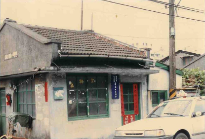

The lives in 44 South Village in the past.
"44 South Village" is the first military village in Taipei. It was built in 1948 and now has more than 69 years of history. It is located in SanChangLi, around Xinyi Rd Sec 5, Keelung Rd Sec 2, SongPing Rd and ZhuangJing Rd. It was built when the government moved from Mainland to Taiwan. Everyone in the village is either worker, technician or families of the 44 arsenal. Due to war, most of the people came from different parts of China. Males consists of HeNan, ShangDong and HuBei, while most of the woman came from the north part of China. Therefore the South Village's culture is mainly from the North.
When the village was built, they used rank to allocate different part of the village. The East and West Village is for the officers and officials. South Village consists of lower rank technicians, their home's size is only 3.5坪 (11.57 Squared meter). The iconic part about 44 South Village is that the south village's technician are all from the same department in the arsenal, unlike other villages which are different military department joined together. Therefore the people in south village has a deeper bond between each other.
Even though the employ of 44 arsenal aren't militants, due to involvement in military confidential, it was highly controlled by the national defense department. As a result, the village also formed a defense department, there were bunkers, airstrike shelters, fire extinguish pool and management committee. After the 70s, these infrastructure had already lost its protection ability instead being a place to store objects or children's playground. Military village is supervised by the national defense department, therefore they created "Self-managment committee" to make general affairs more easily manageable. (Fig.1) The committee in this village is a vital public space, it was the heart of management and action back before.
For the early resident of 44 South Village, the arsenal can be called as parents for their lives. South village resident's living is fully tied up with the arsenal. For example, in the early times electricity is provided by the arsenal. Every day 6am to 9am, 11am to 1pm, 5pm to 12am are the only time where there will be electricity available. Arsenal plays music and ring bell when it's time to go to work or leave work. Due to the lack of electricity, the 2nd generation born in the 1950s(?) rely on the street lamp to study, in addition to that, studying in the nursery and elementary school provided by the arsenal makes everyone know each other in the village. Until the 1970's, the younger started to move away from the village. In addition, the coupling of the 2nd generation is very common in the village. Even cross marriage, the Xinyi kindergarden and elementary school's hall are usually the place for wedding ceremony.
Producing explosive and ammunition is a hazardous job, therefore the village's disables and injury rate is very high. Usually the father in the family dies in explosion, the mother takes the job, this circuitry continues to the 2nd generations. In the village, all infants and children go to the 44 arsenal's nursery and elementary school to study. When it's holiday, they make food together and play ,ahjong as recreation activity.

History
In late November of year 1948, chinese civil war get into urgent situation. 44 arsenal located in Qingdao and all its employees and families rush onboard the TaiKang warship and arrived in Keelung, Taiwan. They settled in temporarily at the 44 arsenal built in ...

Activities
Zhang, Tian-zhi, the ex-44 South Village self management committee says: When the military came to Taiwan, they were expecting to fight back in less than 5 years, but time passes. The president Chiang Kai-shek held a series of recreation event to ease off the high-intensity mood in war, so ...

Food
For the people who used to live in the military village, the food stands for the home they came from. It wasn't luxurious or expensive, but it shows the purity of the traditional culture. Now the residents moved into the city and a lot of the village were reconstructed into ...